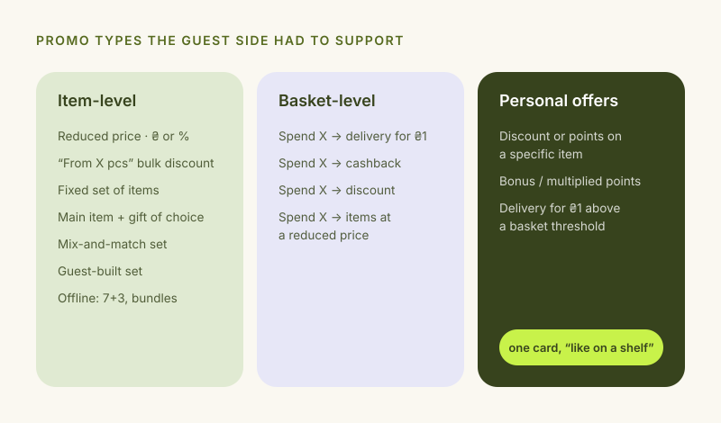

Silpo promotions — one lifecycle for managers, one card for guests.
Both sides of promotions for Silpo’s e-commerce: an admin where commercial and marketing managers launch and run promos without juggling three tools, and a guest-side model that makes any promo mechanic readable at a glance.

Launching a promo meant three tools and a check on prod.
To launch a marketing promo, a manager set it up in one internal system, then checked it on the production environment to be sure it behaved the way marketing or commerce had agreed. Showing it on a product card needed a second source — the activity calendar. A national promo with partners needed a third — loyalty promotions.
That flow grew out of launching Silpo’s delivery service fast and then extending it to other brands of the group. Meanwhile, e-grocery without strong promos was losing guests to competitors. A new promo product had to fix both ends.
Two audiences, one mechanic.
- Promo managersCommercial and marketing managers of Silpo and LOKO first — later account managers of partner companies and restaurants, loyalty programme managers and product owners of specific features.
- GuestsEspecially deal hunters, for whom the discount is the reason to buy — plus guests who haven’t tried Silpo or LOKO services yet but would for the right offer.
One status model instead of three tools.
I mapped every real situation a manager runs into and turned them into states with clear allowed actions — so the question “is it live, and what can I do with it right now?” always has a visible answer.
- Create, then decideSave as a draft or launch on the start date — an explicit choice at save time instead of a status dropdown full of options that don’t apply yet.
- Change it while it’s liveEdit, pause or stop a running promo without recreating it — and resume a paused one in a single action.
- Let it end on its ownPromos close by their end date, so nobody has to remember to switch them off.
Any promo, one readable card.
On the guest side the challenge was range: item discounts, bundles, “from X pieces” pricing, basket thresholds, personal offers. Before any card was drawn, the requirements were pinned down with the product owners:
- One universal solutionEvery mechanic fits the same card, so guests learn it once.
- Conditions clear without extra tapsFor “from X pieces” discounts the bubble states the condition; once it’s met, the old and new price appear.
- Always show the savingGuest research kept confirming it: people look at the benefit first and rarely read the terms.
- “Like on a shelf”Photo, name and price lead — the way a promo tag works in a store.

The questions I put to the business first.
- What is a promo for, besides a bigger basket?The answer decides what the card optimises for.
- Which promo shows first?Is there a priority formula — and do some suppliers get paid placement?
- Do promos and personal offers stack?And do they depend on the store the guest has selected?
What I took from it.
- Statuses are UXA manager’s anxiety lives in the gap between “saved” and “live”. Naming that gap removed most of it.
- Design the taxonomy before the cardListing every mechanic first is what made one universal card possible.
If you liked this, also see…
Found this through Upwork?
Then you already know where to reach me. Send the brief through your Upwork job post or an invite — I usually reply within a working day.